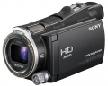

器材库 > 高清摄像机 > HDR-CX700V

规格总览
产品类型
闪存式
发布日期
2011-01-05
厂家推荐价格
1,299.99 （美元）
HD
1080p
视频信号
NTSC
影像传感器
影像传感器
Exmor R CMOS
影像传感器数量
1
影像传感器尺寸
1/2.88英寸
总像素
665万
有效像素（动态模式）
[16:9]614万、 [4:3]460万
有效像素（静态模式）
[16:9]614万、[4:3]460万
镜头和对焦
镜头
索尼G镜头
光圈
f/1.8-f/3.4
焦距
3.8 - 38mm
等效35mm焦距
视频模式：[16：9]26.3- 263mm、[4:3]32.2-322mm；静止图像：[16:9]26.3- 263mm 、[4:3]32.2-322mm
光学变焦
10倍
数码变焦
120倍
滤镜口径
37mm
最近对焦距离
[广角]1cm ， [变焦] 80cm， [特写]32cm
镜头盖
自动
对焦系统
对比度检测自动对焦系统
拍摄性能
录制格式-视频
HD: MPEG4-AVC/ H.264；STD: MPEG2-PS
录制格式-静态图像
JPEG
视频尺寸
HD: 1920×1080@60p (PS), 24p, 60i (FX, FH)； 1440×1080@60i (HQ, LP)；STD: 720×480@60i
视频记录速率
60i, 24p, 60p
录制时间
HD PS: 7小时55分; HD FX:9小时20分; HD FH: 12小时45分; HD HQ: 22小时40分; HD LP: 39小时45分; STD HQ: 23小时40分；
静态图像尺寸
[1230万像素，16：9]4672×2628；[920万像素，4：3]3504×2628；[330万像素，4：3]2112×1584；[30万像素、 4：3]640×480
最低照度
[标准、1/60s]11lux；[低照度、1/30s]3lux；[夜摄、1/60s]0lux
夜摄功能
有
内置麦克风
是
内置喇叭
是
手动曝光
有
快门速度
[全自动]1/8-1/1500s；[标准]1/60-1/1500s；[光圈优先]1/60-1/10000s；[快门优先]1/8-1/10000s
防抖系统
光学图像稳定器
液晶屏/取景器
取景器
0.2英寸、20.16万像素
LCD尺寸
3.0英寸
LCD像素
92.1万
LCD类型
Xtra Fine LCD
LCD特性
触摸屏
存储规格
内置存储容量
96GB
存储卡
MS/MS PRO记忆棒, SD/SDHC, SDXC
闪光灯
内置闪光灯
闪光模式：自动/强制/禁止；范围：0.3-1.5m；测光系统：Pre-flash TTL；曝光补偿：3级
输入输出
数据接口
USB2.0
视频/音频接口
HDMI Mini 输出
配件端口
遥控线, 热靴
电源
电源（电池/电源适配器）
NP-FV50
耗电量
HD: 3.2W; STD: 3.0W
机身规格
颜色
黑色
尺寸
62×72.5×139mm
重量
490g
其它
附件
电池套装NP-FV50，AV数据线，CD光盘，AC适配器AC-L200，操作指南，电源线，USB数据线
6091739652013-05-15 17:484.69 分
操作性 4.50功能性 5.00美观性 4.50趣味性 4.50耐用性 5.00性价比 4.50解像力 4.50色彩还原 5.00
尘土飞扬2011-01-15 23:34
产品图 / 样片
索尼 HDR-CX700V
评测 / 相关文章
- 详细内容 （存档）
- ［行情］2011年第34周数码摄像机人气榜 （存档）
- ［行情］2011年第31周数码摄像机人气榜 （存档）
- ［行情］2011年第27周数码摄像机人气榜 （存档）
- ［行情］2011年第26周数码摄像机人气榜 （存档）
- ［行情］2011年第25周数码摄像机人气榜 （存档）
- ［行情］2011年第24周数码摄像机人气榜 （存档）
- ［行情］2011年第23周数码摄像机人气榜 （存档）
- ［行情］2011年第21周数码摄像机人气榜 （存档）
- ［行情］2011年第18周数码摄像机人气榜 （存档）
- ［行情］2011年第16周数码摄像机人气榜 （存档）